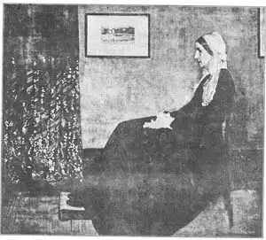
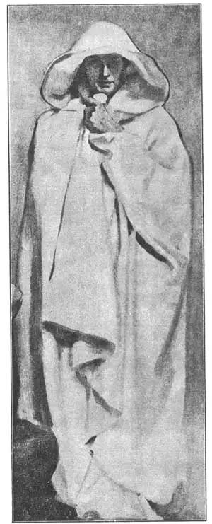

30
TWO EUROPEAN AMERICANS
两个欧洲美国人

PAINTINGS sometimes go visiting. In 1932 a famous painting was carefully taken from its home in the Louvre in Paris, put on an ocean liner, and allowed to go on a visit to New York. The last time this painting had been in the United States was fifty years before. Then, no one thought enough of it to pay the thousand dollars that its painter was asking for it. On its second visit crowds of people went to see the painting, and if any one had offered many, many thousands of dollars for it he could not have bought it. For it is now one of the great art treasures of the great French art museum and it is not for sale. In New York it was treated as an honored guest.
The man who painted this visiting picture named it “An Arrangement in Gray and Black.” But it became too well loved to be called by such an uninteresting name. So every one calls it now simply “Whistler’s Mother.” Whistler was the artist who painted it.
James McNeill Whistler was an American, but most of his life was spent in Europe. He was a very conceited little man. He quarreled with his friends and seemed to like making enemies wherever he went. This probably helped him to become famous, because it kept people talking about him. He was always news. Perhaps that is why he wore a monocle, which is an eyeglass for just one eye, and why he carried an extra long cane and signed his pictures with a butterfly. Perhaps too, that was why he even put rouge on his cheeks to make them look pink! He liked to be talked about. He liked to be news.
But of course, no matter how much people talked about him, Whistler would not have been a great artist if he had not painted good pictures. And every one agrees that his“Mother” is a good picture. It is a different kind of portrait from those other artists had painted before. That is why it wasn’t admired as much at first as it is now. Whistler’s mother is shown sitting beside a wall. On the wall hangs a picture in a black frame. You can see that everything in the painting is in straight lines except the old lady herself.
How big would you guess the portrait of Whistler’s mother is? Would you be surprised to hear that the mother in the picture is life–size? As she is life–size, you can see that the painting is a rather large one.
I think you would be surprised, if you could see some of Whistler’s paintings, at the way he used colors. Some of his pictures are almost all blue in color—dark blues and light blues and medium blues, all blended to make a picture that is unlike the picture of any artist who used many different colors. Some are almost all white. “The White Girl,” for instance, shows a girl in a white dress seen against a white background. You can guess that that is not the easiest kind of picture to paint and that Whistler must have been skilful to do it successfully. He was—very skilful.

No.30-1 WHISTLER’S MOTHER（《惠斯勒的母亲》） WHISTLER（惠斯勒 作）
Another famous American painter who lived most of the time in Europe was John Singer Sargent. During his lifetime Sargent became the most famous living painter of portraits. He painted portraits of many rich people and many important people. Indeed, it was an honor to have Sargent paint your portrait.
Most of Sargent’s portraits are no doubt very good. They are still admired very much, but I like his wall paintings in Boston best of all his work. When the Boston Public Library was built, Sargent was asked to decorate the walls on the third floor. He painted religious pictures for these walls. One wall shows the children of Israel worshiping the old false gods. Underneath this is a long row of Hebrew prophets from the Old Testament. These prophets seem to be bewailing the evils of their people’s ways. The prophet pictures have become such favorites that you see framed copies of some of them on the walls of houses all over the United States.
On another wall Sargent painted saints and angels, with the crucified Christ in the center. He painted these figures with bands of real gold about their heads and with the figure of Christ carved like a statue as well as painted. People who saw them marveled that a portrait painter could paint these large wall decorations so splendidly. Now visitors to Boston go to the library just to admire the wall paintings there. I advise you to see them too, when you go to Boston.

No.30-2 THE PROPHET HOSEA（《先知何西亚》）
SARGENT（萨金特 作）
【中文阅读】
绘画作品有时候也出访。1932年，一幅名画被小心翼翼地带出巴黎卢浮宫，登上海轮，远离家乡，出访纽约。这幅画在美国的最后一次亮相是在五十年前。当时没有人能充分认识到花上千元美金去满足画家的要价。这幅画第二次出访时，人们成群结队前去观赏。即使有人愿出数千美金也买它不下，因为这幅画现在已是大法艺术博物馆最珍贵的艺术瑰宝之一，只展不售。这幅画在纽约受到了贵宾般的接待。
这幅巡访画的画家把此画命名为《灰色与黑色改编曲》。不过，人们不愿用这个毫无情趣的名字来叫它，因为他们实在太喜欢这幅画了。现在，大家直接称它《惠斯勒的母亲》。惠斯勒就是画这幅画的画家。
詹姆斯·麦克尼尔·惠斯勒是美国人，不过他一生大多时候住在欧洲。他是个十分自负的小人。他和朋友拌嘴，好像喜欢处处与人为敌。这或许反而增加了他的知名度，因为人们为此经常谈论他。麦克尼尔总是新闻不断，这或许是他为什么戴单片眼镜，手持一根特长的手杖以及用蝴蝶在他的画上落款的原因吧。这或许也解释了他为 什么甚至在腮帮上涂红，使脸变得红扑扑的！他乐于被人谈论，喜欢成为新闻人物。
然而，不管人们谈论多少，要是他画得不好，他还是不能成为一名大画家。大家都承认《母亲》那幅画的确很棒。这幅画与之前画家们的肖像画截然不同，所以一开始它并没有像现在这样受欢迎。画中，惠斯勒的母亲坐在墙边上，这面墙上挂着一幅黑白边框的图画。除了这位老夫人外，画面上所有的其他东西都是用直线条勾勒的。
你猜猜惠斯勒母亲的这幅肖像画有多大？如果你听说这幅画上母亲有真人那么大，你会觉得奇怪吗？因为画上母亲有真人一般大，所以你可以看出这幅画一定是相当的大。
我想，如果你能看到惠斯勒的一些画，一定会惊讶于他运用色彩的方法。他有些画几乎都是蓝色的——混合了深蓝、淡蓝和中蓝，这与其他画家色彩绚丽的绘画着实不同。他还有些画几乎都是白色的，例如《白衣少女》中的少女一袭白裙靠在白色的背景上。能猜想，这种画并不好画，惠斯勒的绘画技巧要十分娴熟才能成功做到这点。而他，的确技巧娴熟。
还有一位著名的美国画家叫约翰·辛格·萨金特，他大部分时间生活在欧洲。萨金特在活着的时候就成为当时最著名的肖像画家。如果能让萨金特给你画幅画，这可是荣幸之至啊。
毫无疑问，萨金特大部分肖像画都很棒。它们至今仍深受欢迎。不过，在他所有绘画作品中，我还是喜欢他的波士顿壁画。波士顿公共图书馆建立后，萨金特应邀为第三楼层的内墙画装饰画。他在这些墙壁上画了许多宗教题材的画。其中一面墙上画的是以色列人正在朝拜古代假神的情景。在这幅画的底部画的是一大长排《旧约》中的希伯来先知。这些先知们似乎在哀叹同胞们犯下的罪恶。人们非常喜爱这些先知画像，所以，在美国，你到处都能看见这些画像装裱好的复制品。
萨金特在另外一面墙上画了许多圣徒和天使，画的中间是被钉十字架的基督。他用真金描绘这些人物的头部，基督的画像就像雕刻的塑像一样。看见这些画，人们一定会惊叹，一位肖像画家竟能画出如此富丽堂皇的大型壁画。如今，人们都慕名到波士顿公共图书馆欣赏这些壁画。如果去波士顿，我建议你也去看看这些画。